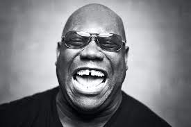
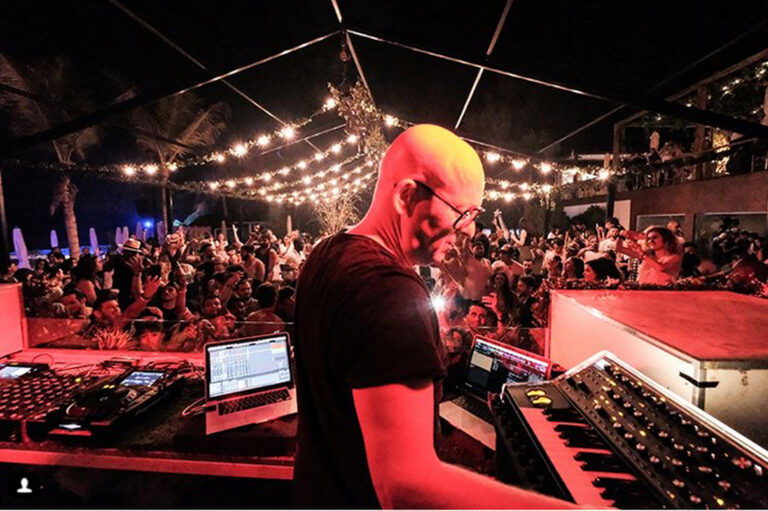

Nuestros artistas
Waff
wAFF es sin dudas uno de los DJs con mayor impacto en la escena house a nivel mundial en los últimos años. Con una carrera por demás exitosa, el inglés Jon Wafer es una máquina de hacer hits. Desde sus primeros años hasta la actualidad. No es casualidad que haya llegado a los mejores sellos del género y haya compartido cabina con leyendas, en los más famosos festivales y venues.
Hot Since 82
Daley Padley, más conocido por su nombre artístico Hot Since 82, es un DJ británico, productor de música house y ganador del DJ Awards (2015), actualmente residente en Leeds, Reino Unido.Ha lanzado música bajo el apodo Hot Since 82 desde 2012.Padley lanzó su propia compañía discográfica, Knee Deep in Sound, en 2014, en la que espera lanzar música de artistas emergentes con un sonido underground "de vinilo".
Carl Cox
Carl Andrew Cox (Oldham, Gran Mánchester, 29 de julio de 1962) es un DJ y productor británico de origen barbadense de house, techno y tech house.Fue nombrado DJ #1 en 1996 y 1997 por la revista DJmag y, según expertos en música electrónica, Cox ocupa el puesto número 1 a nivel mundial en calidad musical y técnica.
Stephan Bodzdin
El productor alemán posee una línea transversal que marca su música a lo largo de su vida y de su carrera artística, esa característica es la melodía. Conocemos al productor analógico por excelencia. a melodía tiene algo característico que lo hace diferente a otro conjunto de sonidos puede llegar a la fibra más fina de los sentimientos.